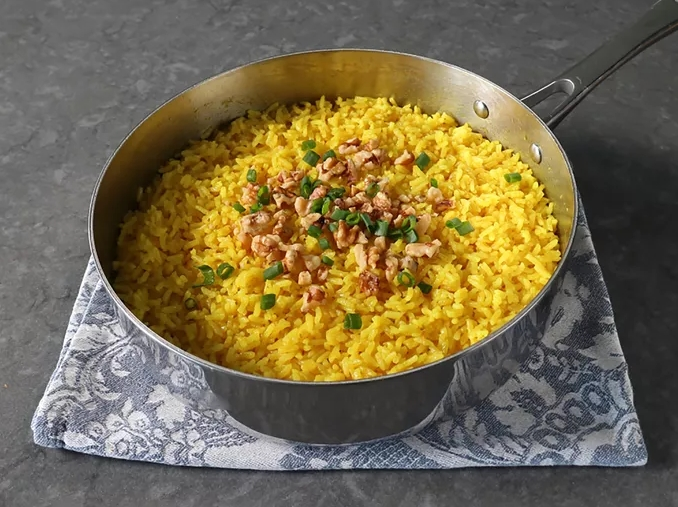

Golden Butter Rice

Golden Butter Rice
This golden butter rice, flavored with ginger and turmeric, is a forgotten way of cooking butter rice.
It isn't cooked rice with butter stirred in, it really is rice cooked in butter.
This is my favorite version, with seasonings inspired by a classic Indian drink called golden milk.
Ingredients
- 1/2 cup unsalted butter
- 1 tablespoon finely grated fresh ginger
- 1/4 teaspoon cayenne pepper
Step to make t his trash
Melt butter in a pan or pot with a tight-fitting lid over medium heat. As soon as butter starts to bubble, add in ginger, turmeric, cayenne, brown sugar, and salt. Cook, whisking, for 1 minute.
Add rice, and stir until every grain is coated with butter. Stir in water, and bring to a boil over high heat. As soon as it begins to boil, gently shake and swirl the pan to settle rice into an even layer, then reduce heat to medium-low.